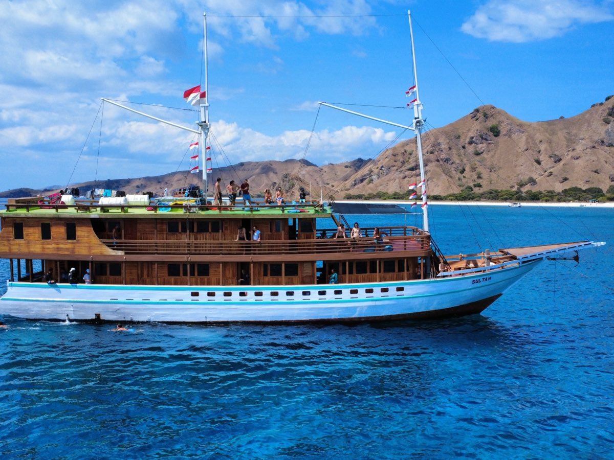
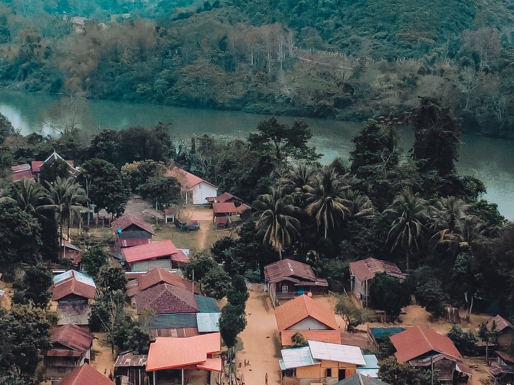
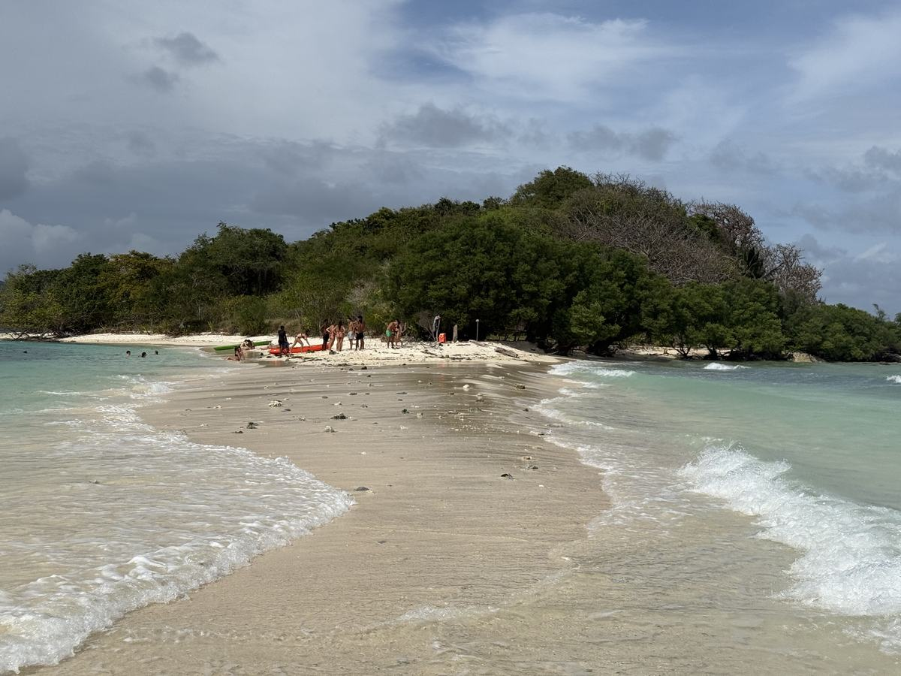

Indonésie
Voyager à Bali
Neuf étapes du sud aux montagnes du nord : budget, transports et bonnes adresses.
Lire le guide
Bali • Komodo • Laos • Vietnam • Philippines • New York • Australie
Un guide par destination, écrit depuis le terrain : le concret, le budget réel, les erreurs que j'ai faites pour que tu ne les fasses pas.
Neuf étapes du sud aux montagnes du nord : budget, transports et bonnes adresses.
Lire le guide

Quatre jours de bateau entre les îles : choisir son équipage, le budget et ce qu'on voit.
Lire le guide

Un pays qui se traverse lentement : itinéraire, transports, budget et bonnes surprises.
Lire le guide
Trois semaines du nord au sud : bus de nuit, boucle de Ha Giang et budget réel.
Lire le guide

Palawan de bout en bout, et trois jours de navigation entre El Nido et Coron.
Lire le guide
Un quartier par jour, le métro, les points de vue et où courir en ville.
Lire le guide
Visa, assurance, budget, banque, arrivée et 88 jours. Une section entière.
Voir la section
D'autres destinations arrivent au fil des voyages. Les liens et le matériel cités dans les guides sont réunis sur la page Voyage.